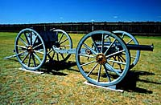

Battle River Forts
Fort Battleford
Fort Carlton
Fort Esperance
Fort Livingstone
Fort Pelly
Fort Pitt
Fort Walsh
Short Creek Camp
Woodend Post
Wood Mountain Post
|
Battle River Forts
Toward the end of the 18th century, the Cree pushed into this region seeking new beaver territory for the increasing fur trade. After 1805, the NorWesters and the Hudson's Bay Company built rival Battle River Forts.
 When Fort Battleford was constructed as a North West Mounted Police post in 1876, the town was designated as the capital of the newly created North West Territories.
The fort obtained pemmican, dried meat, pounded meat, and grease from the Indians, as well as furs and hides. In exchange, traders received guns, tobacco, cloth, blankets, beads, and metal goods.
In 1816, at the height of the conflict between the Hudson's Bay Company and the NorWesters, the H.B.Co. Fort Esperance was burned to the ground by the NorWesters.
The original headquarters and first post built specifically for the North-West Mounted Police, Fort Livingstone, was erected in 1874.
|
|
|
|
Fort Pelly
The elbow of the Assiniboine River was an age-old meeting place. It became strategically important in the fur trade after 1793.
A major resort of the Cree, Assiniboine and Blackfoot, Fort Pitt was a site of the signing of Treaty No. 6 in 1876.
The NWMP first marched west in 1874. The historic journey was a nightmare of dust storms, blistering heat, mosquitoes, horse flies and bad water.
In 1874, the North-West Mounted Police force introduced a new chapter of law enforcement on the Canadian plains.
The Woodend North West Mounted Police Post was established on Long Creek in 1886.
Wood Mountain NWMP Post was ideally suited as a depot because it had good water, abundant grazing and wood for construction. It became the first NWMP post in the southwest.
|